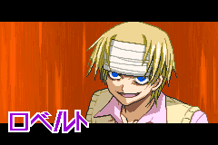
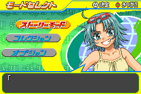

Ueki no Housoku - Jingi Sakuretsu! Nouryokusha Battle (Japan)
Stateless / Passcode 💾 MultiBoot 🎮 4P Link 🔌 Game Boy Player Rumble (libgbp)
Cartridge Identity
- Game Code
BUHJ(FamilyBUH)- Header Title
UEKIJINGIBTL- Maker / Revision
D9/ rev0- ROM Size
- 8.0 MiB (8,388,608 B)
- Save Media
None / Unknown- SHA-256
0a37fe75815512cdfc6512acf81236a0b192e76e9caf9d41c17ad03f08b872ec- Engine / SDK Group
comm-001(196 families)
Screenshots


Niche & Rare Accessories
Detected niche/rare GBA accessory support: 🔌 Game Boy Player Rumble (libgbp).
Full 343-ROM corpus breakdown in the Cartridge Hardware & Niche Accessories Reference · auto-detected from ROM bytes via
gbakit inspect.
- Game Boy Player Rumble (libgbp)
- SIO
0x04000120· ACK0x8002@0x0533cc· official 18 KB GBP logo @0x7ae3a0
Link Cable & Multiplayer Communications
This title contains detected communication capabilities: 💾 MultiBoot 🎮 4P Link.
Detailed protocol specifications, SIO registers, Joybus commands, and MultiBoot sequences are documented in the Link & Multiplayer Reference.
- Multi-Player SIO (4P)
- 16-bit ring network · SIOCNT (
0x04000128) literals:0x052e90,0x053220,0x0532d0· SIODATA32/SIOMULTI0 (0x04000120) literals:0x053328,0x0533a4,0x053410 - Single-Cart MultiBoot
- Single-Cartridge MultiBoot (Download Play) client/server handler · Thumb SWI 0x25 (
0xDF25):0x06c220,0x0733f0,0x099af2,0x0c4dde
Cartridge Storage Architecture: Stateless / Passcode
Zero non-volatile battery hardware: This cartridge PCB contains ROM only (no SRAM, Flash, or EEPROM chips). Progression is preserved via on-screen passcodes or session-only gameplay. No
.sav file is generated or required.
ROM Assets, Compression & Audio
- BIOS Compression
- LZ77 (
0x10): 96 streams · RLE (0x30): 0 streams - ROM Pointer Tables
- 101 tables (0 pointing to validated compressed streams)
- SDK Backup Tags
EEPROM_V124,FLASH512_V131
Text, Fonts & Scene Data
- Primary Text Encoding
- Shift-JIS (uncompressed) (
19ASCII strings ·200Shift-JIS runs) - Font & VWF Indicators
- VWF Width Table 1bpp Font · BIOS SWIs: BitUnPack
0x10:19· LZ770x11/12:40· Huffman0x13:13· RLE0x14/15:27 - Scene & Packaging
31ROM pointer tables (≥32 entries,1≥200) ·7relativeu32TOCs ·295OAM metasprite hits
Hardware MMIO Subsystems
ppu_display0x804b348,0x804c140